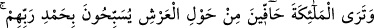

bir düşünce yaratmaz.” denilmiştir.
el-Kevâşî’de ise şöyle der: “Bu ifâde, bir kimsenin başkasının yerine oturacağına
değil, ihtiyaç duyulandan daha fazla bir bolluk ve fazlalık bulunacağına işâret
etmektedir.”
Fethu’r-Rahmân’da der ki: “Rivâyete göre Muhammed ümmeti ilk olarak cennete
girer ve cennetin diledikleri yerine yerleşir. Sonra da diğer ümmetler cennete girer.”
“İyi amelde bulunanların mükâfatı” fermana boyun eğenlerin sevabı olan cennet “ne
güzelmiş!” derler.”
Büyüklerden birisi şöyle der: “Hiç bir farîza, nâfile, hayır işi, haram ve mekruhu terk
yoktur ki ona mahsus bir cennet ve ona has nimetler olmasın. Bu cennet ve nimetlere o
cennete girenler nâil olurlar. Yine hiçbir amel yoktur ki, sâhipleri arasında bir üstünlük
sıralamasının meydana geleceği bir cennet olmasın. Üstünlük sıralaması ise mertebe
mertebe olacaktır: Mertebelerden biri, yaşa göre belirlenecektir. Ancak tâat ve İslâm
üzere geçirilen yaşa göre. Buna göre aynı amel mertebesinde oldukları takdirde yaşı
büyük olan küçük olandan üstün tutulacaktır. Bir mertebe de (amelin işlendiği) zamana
göredir. Çünkü Ramazan’da, Cuma günü, kadir gecesi, Zilhicce’nin on gününde, aşure
(âşûrâ) günü diğer zamanlarda yapılanlardan daha büyüktür. Bir başka mertebe ise
(amelin işlendiği) mekâna göredir. Mescid-i Haram’da kılınan namaz Mescid-i
Nebevî’de kılınandan, orada kılınan Mescid-i Aksâ’da kılınandan, orada kılınan da
diğer mescid ve camilerde kılınandan efdaldir. Bu mertebelerden biri de (amelin
işlendiği) hallere göredir. Çünkü cemâatle kılınan namaz tek başına kılınan namazdan
efdaldir. Bu mertebelerden biri de amellerin kendisine göredir. Çünkü namaz yoldan
eziyet verecek bir şeyi kaldırmaktan efdaldir. Bir başka mertebe ise bir tek ameldedir.
Meselâ kendi yakınlarına tasaddukta bulunan biri, hem sıla-i rahimde bulunmuş hem de
sadaka vermiş olmaktadır. Yine ehl-i beytten bir şerîfe hediye veren, başkasına hediye
verenden ya da ihsanda bulunandan efdaldir.
Öyle insanlar vardır ki bir zamanda bir çok ameli toplar. Meselâ oruç tuttuğu ya da
sadaka verdiği sırada gözünü, kulağını ve elini gerektiği şekilde kullanır. Hattâ namaz
kıldığı esnâda, Allah’ı zikrederken, bir şeyi yapmaya ya da terke niyyet ederken ayrı bir
çok ameli bir araya getirir de bir zamanda bir çok yönden ecir ve mükâfat kazanır.
Böylece kendisinde böyle bir özellik olmayanlardan üstün olur. Yüce Allah’tan bizi de
sâlih amelleri bir araya getiren ve güzel amellerde yarışanlardan kılmasını niyâz ederiz.
Sa’dî, Bostân’da der ki:
Koşuda hızlı gidenleri geçemedin; ama hiç olmazsa düşe kalka git
O yel ayaklılar hızla gittilerse, sen de elsiz ayaksız oturma, kalk git